Unifies – B2B SaaS-стартап. Я була на проєкті єдиною дизайнеркою з жовтня 2024 до травня 2025 і вела дизайн від структури й флоу до UI kit – для вебу й мобільного.
Структура
У бічному меню три розділи – Overview, Calendar і Transcriptions – і кнопка New Meeting над ними. Навколо: онбординг із підключенням робочого простору й інтеграцій, доступність, сторінки бронювання, сповіщення й налаштування.
- Вхід
- Connect to Workspace
- Вхід через Google
- Complete Setup
- ClickUp
- Telegram
- Connect to Workspace
- Overview
- Найближча зустріч · Join
- Зустрічі на сьогодні
- AI-панель
- AI-чат
- Немає зустрічей
- Calendar
- День
- See all · накладки
- Тиждень
- Місяць
- День
- Transcriptions
- Список зустрічей
- Зустріч
- Summary
- Action Items
- Key Questions
- Transcript
- Зустріч
- Немає транскрипцій
- Немає підсумків
- Список зустрічей
- New Meeting
- Форма зустрічі
- Вибір дати
- Учасники
- Транскрипція вкл/викл
- Форма зустрічі
- Мобільне меню
- Notifications
- Availability
- Booking Pages
- Settings
- Екран
- Модалка / шторка
- Блок на екрані
- Порожній стан
- Пункт меню
- 01Створити зустрічФормою або в чаті: асистент питає мету й тривалість
- 02Додати людейВесь проєкт одним пунктом або окремі учасники
- 03Побачити в дніЗустріч зʼявляється на огляді й у календарі
- 04ПідключитисяJoin Meeting – з огляду або з календаря
- 05Отримати результатTranscriptions: підсумок, задачі, питання й транскрипт
Найближча зустріч – головна на екрані
- Ідея
- Огляд відповідає на одне питання: що в мене сьогодні і куди підключатися зараз.
- Що зробила
- Найближча зустріч виділена кольором і має кнопку Join Meeting. Решта – спокійним списком із часом, описом і учасниками. Над списком – скільки зустрічей ще попереду.
- Деталь
- Коли зустрічей немає, екран прямо про це каже, а не лишається порожнім.

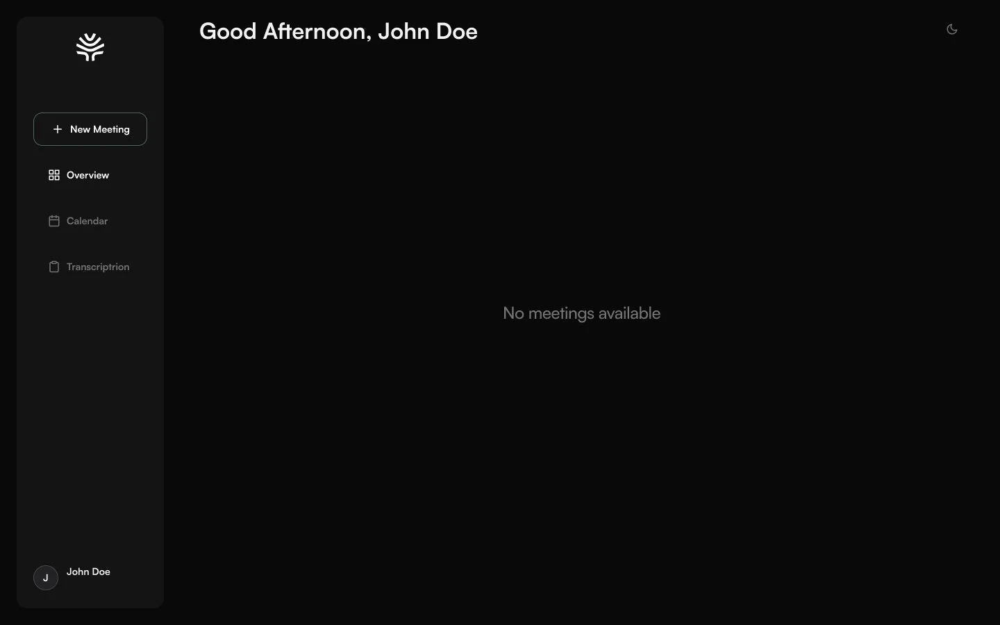
Зустріч – формою або в розмові з AI
- Ідея
- Ті самі дані зустрічі можна задати двома способами: заповнити поля або сказати словами.
- Що зробила
- Форма New Meeting: назва, проєкт, дата й час, повтор, учасники, опис. На огляді – AI-панель зі швидкими діями «створити зустріч», «підготувати агенду», «підсумувати останній дзвінок» і чат, де асистент по черзі питає мету й тривалість. Писати можна текстом або голосом.
- Деталь
- Учасників можна додати всім проєктом одним пунктом або вибрати окремо. Транскрипція – перемикач у формі: її вмикають для конкретної зустрічі.
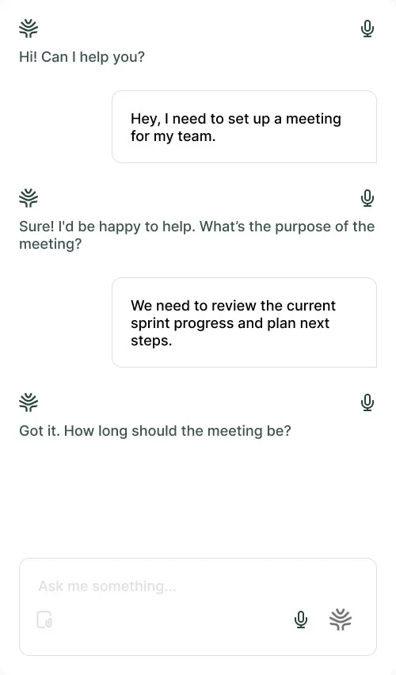
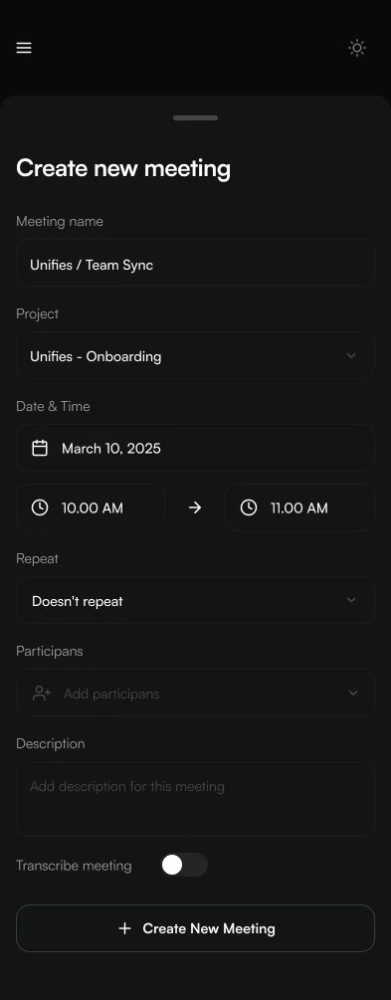
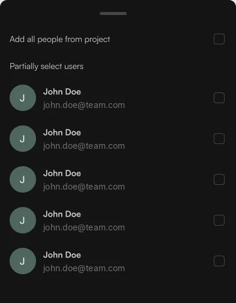
Результат зустрічі – чотири вкладки, а не один текст
- Ідея
- Після зустрічі шукають різне: що вирішили, хто що робить, що лишилось відкритим і що саме прозвучало.
- Що зробила
- Summary, Action Items, Key Questions і Transcript із таймкодами та іменами – кожне у своїй вкладці.
- Деталь
- Для підсумків і транскрипцій є порожні стани – на випадок, коли даних ще немає.
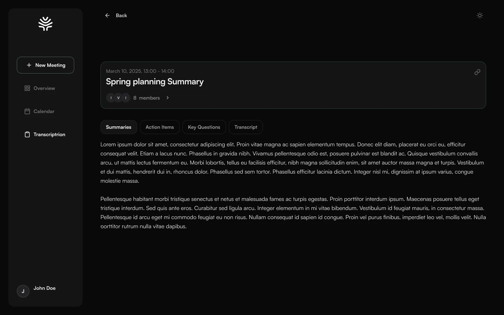
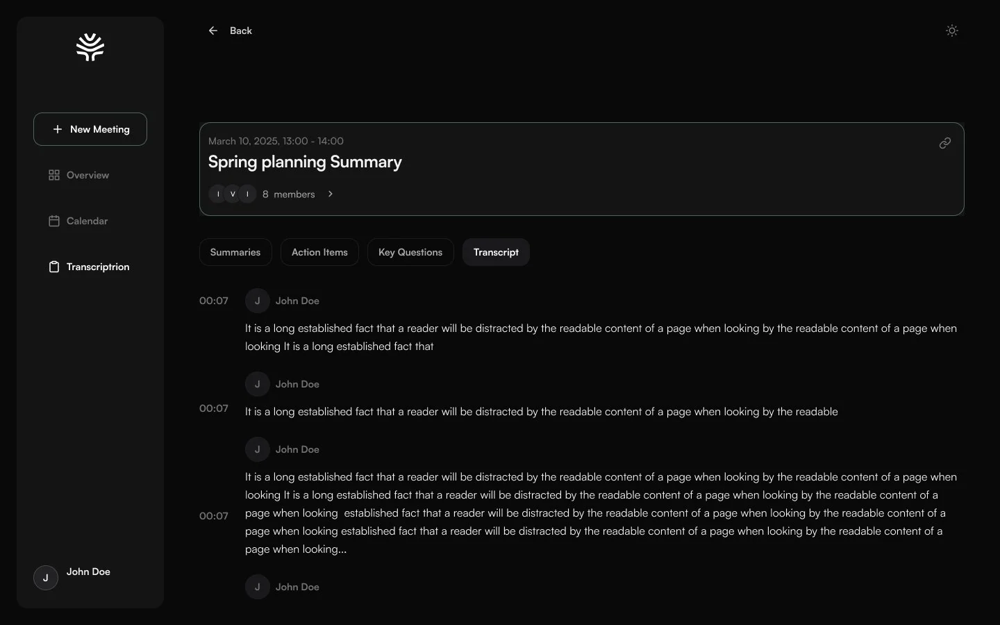
Календар витримує зустрічі, що накладаються
- Що зробила
- Зустрічі стоять на сітці часу з лінією поточного моменту. Короткі – компактні плашки, довгі розкриваються з учасниками, а ті, що не вміщаються, ховаються під See all.
- Деталь
- День, тиждень і місяць перемикаються в одному полі.
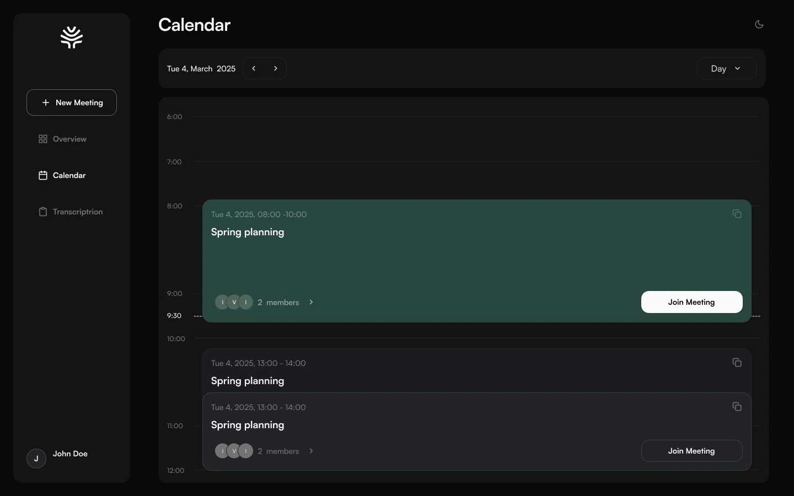
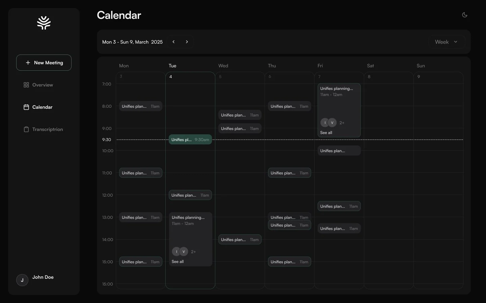
Онбординг і мобільна версія
Онбординг та інтеграції
Вхід через Google і підключення робочого простору, далі – інтеграції з ClickUp і Telegram.
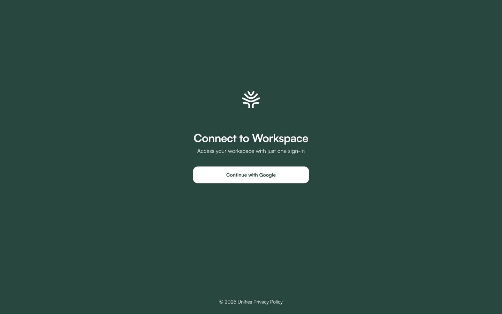
Мобільна версія
Ті самі сценарії на телефоні: огляд дня, календар, транскрипт і створення зустрічі. Меню ховається під бургер.
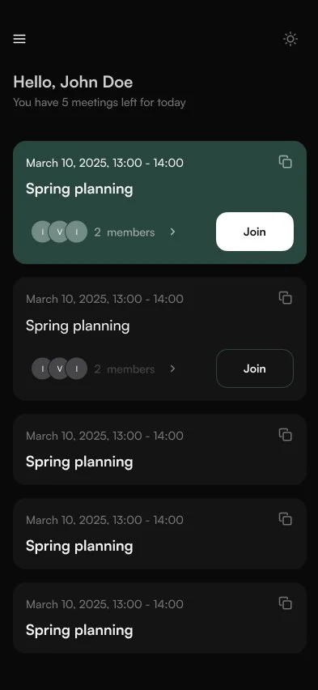
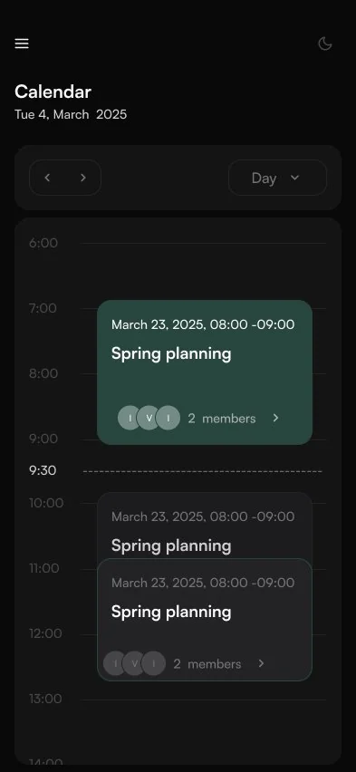
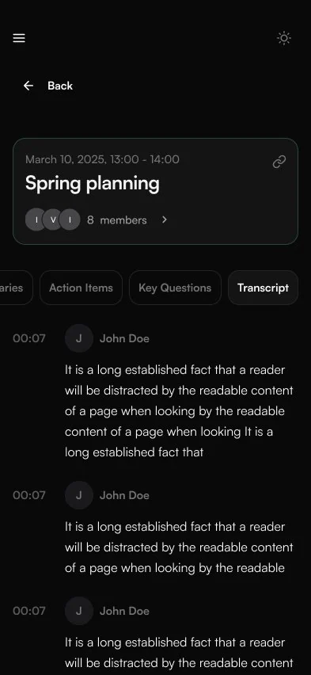
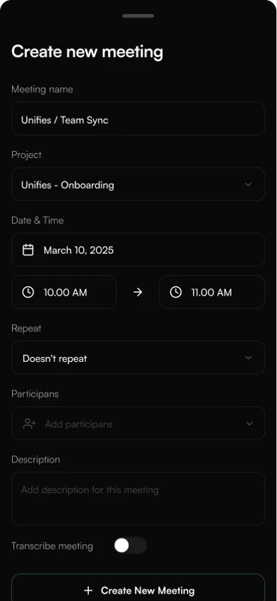
Система
Кольори винесені в токени з правилами використання, тому ті самі компоненти працюють у двох темах. Основна – темна, а світла збирається з тих самих токенів. UI kit також містить типографіку, кнопки, поля, чекбокси й картки.
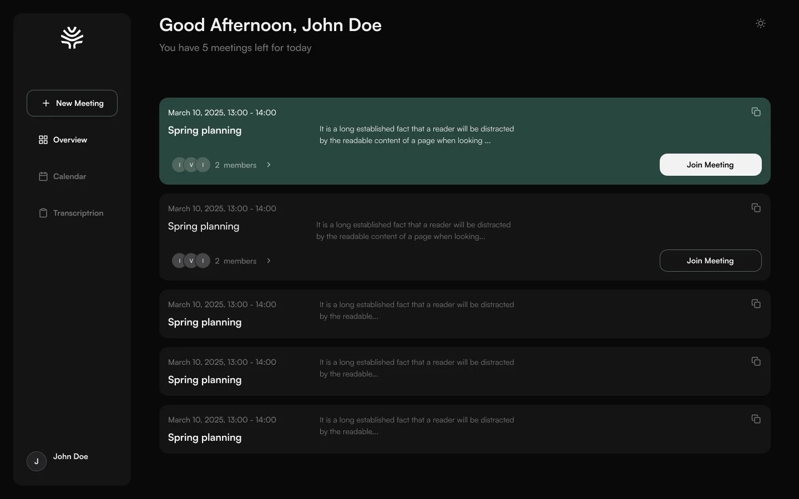
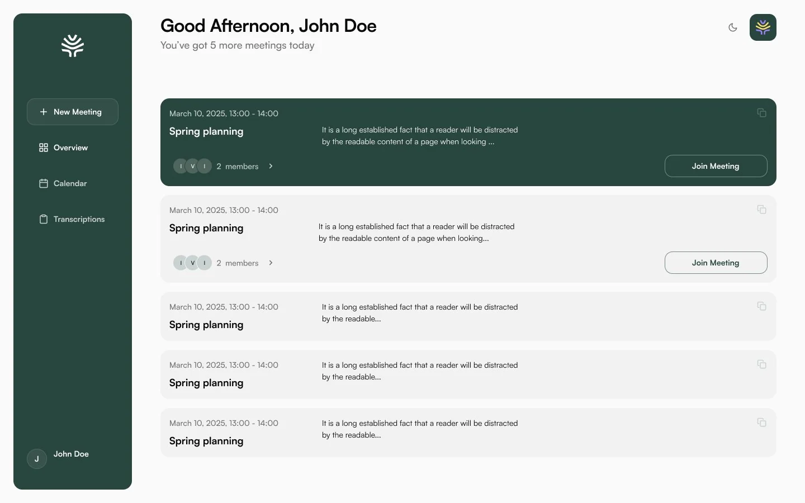
- 01
Перший проєкт, де я проєктувала AI-функції: що людина отримує після зустрічі і як це розкласти, щоб швидко знайти потрібне.
- 02
Темна й світла тема на одних токенах і мобільна версія для всіх основних сценаріїв.
- 03
AI тут – не окремий розділ, а шар над звичними екранами: панель на огляді, чат для створення зустрічі й вкладки з результатом.